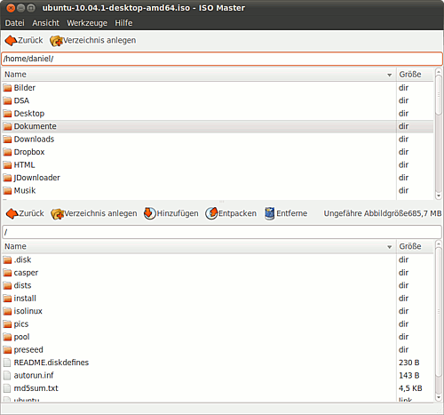

ISO Master
Dieser Artikel wurde für die folgenden Ubuntu-Versionen getestet:
Ubuntu 14.04 Trusty Tahr
Zum Verständnis dieses Artikels sind folgende Seiten hilfreich:
ISO Master  ist ein Programm zum Erstellen und Bearbeiten von ISO-9660-Abbildern. Es ist hiermit jedoch nicht möglich, Abbilder zu bearbeiten, die UDF-formatiert sind. ISO Master kann die Abbilder auch bootfähig machen und unterstützt die Namensformate Joliet und Rock Ridge. Es existiert auch eine Windows-Version des Programms, welche jedoch anders als die Linux-Version nicht unter der GPL lizenziert ist, sondern als Shareware vertrieben wird.
ist ein Programm zum Erstellen und Bearbeiten von ISO-9660-Abbildern. Es ist hiermit jedoch nicht möglich, Abbilder zu bearbeiten, die UDF-formatiert sind. ISO Master kann die Abbilder auch bootfähig machen und unterstützt die Namensformate Joliet und Rock Ridge. Es existiert auch eine Windows-Version des Programms, welche jedoch anders als die Linux-Version nicht unter der GPL lizenziert ist, sondern als Shareware vertrieben wird.
Installation¶
Zur Installation des Programms muss folgendes Paket installiert werden [1]:
isomaster (universe)
 mit apturl
mit apturl
Paketliste zum Kopieren:
sudo apt-get install isomaster
sudo aptitude install isomaster
Benutzung¶
Hinweis:
Leider gibt es keinen allgemeingültigen Weg, um im voraus herauszufinden, ob ein Abbild mit ISO Master bearbeitet werden kann. Dateien mit der Endung .iso sollten in der Regel funktionieren. Zeigt Isomaster nach dem Öffnen des Abbildes keinen oder nicht den gewünschten Inhalt an, hat das Abbild leider ein falsches Format und kann mit ISO Master nicht bearbeitet werden.

Das ISO Master-Fenster ist in zwei Teile geteilt: Der obere Teil zeigt den Verzeichnisbaum des lokalen Dateisystems, der untere den des geöffneten Abbildes. Unter "Werkzeuge -> Optionen" kann man den zu verwendenden Texteditor sowie einen Webbrowser einrichten, ein temporäres Verzeichnis wählen, doppelte Einträge suchen lassen (falls man die gleiche Datei nicht mehrmals haben möchte) und das Programm anweisen, symbolischen Verweisen zu folgen, statt sie zu übernehmen.
Die Bearbeitung sowie Neuerstellung eines Abbildes ist recht selbsterklärend, eine kurze Erklärung dazu kann auch über F1 oder "Hilfe -> Übersicht" gefunden werden: Nachdem man aus dem Menü "Datei" den entsprechenden Eintrag gewählt hat, kann man mit den Werkzeugleisten oberhalb der Verzeichnisstrukturen Dateien und Ordner zum Abbild hinzufügen, aus diesem löschen und vom Abbild auf die lokale Festplatte entpacken.
Boot-Record bearbeiten¶
Möchte man ein bootfähiges Abbild erstellen, so bietet hier das Menü "Werkzeuge -> BootRecord" einige Möglichkeiten an. "Eigenschaften" zeigt Informationen über den aktuellen Boot-Record des Abbildes, beispielsweise Größe, Art und Sichtbarkeit. Mit "Speichern unter" kann man den Boot-Record des Abbildes auf der lokalen Festplatte in eine Datei speichern, als Sicherung vor einer Veränderung, oder um ihn bei anderen Abbildern ebenfalls verwenden zu können. Mit "Löschen" entfernt man den Boot-Record aus dem Abbild und über "Hinzufügen" kann man einen zum Abbild hinzufügen. Hierbei hat man die Möglichkeit, verschiedene Disketten-Boot-Records zu emulieren.
- Erstellt mit Inyoka
-
 2004 – 2017 ubuntuusers.de • Einige Rechte vorbehalten
2004 – 2017 ubuntuusers.de • Einige Rechte vorbehalten
Lizenz • Kontakt • Datenschutz • Impressum • Serverstatus -
Serverhousing gespendet von